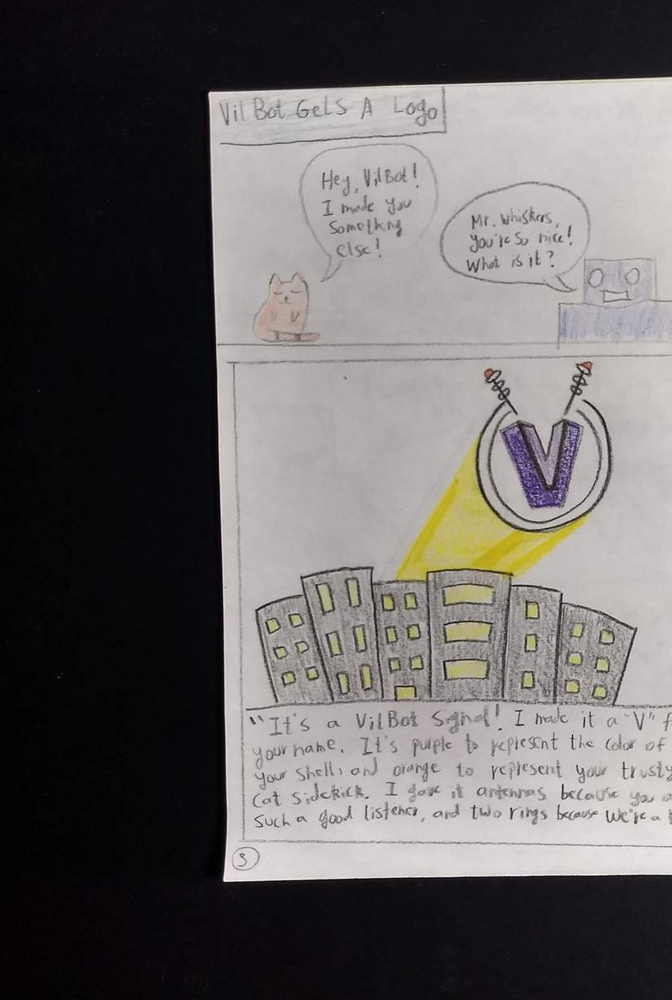

COMICS · LESSON 4 OF 5
Design Your Hero Logo
Create a simple mark that tells readers something important about your hero at a glance.
- Time / Tiempo: one class period / un periodo de clase
- You need / Necesitas: your comic, pencil, and coloring supplies / tu cómic, lápiz y materiales para colorear
- Today you add / Hoy agregas: Page 3 / Página 3
One mark, one quick message
A logo cannot tell your hero's whole story. It can give readers one strong clue. Your symbol and colors should communicate one trait, purpose, or idea connected to the hero you already created.
Words for today: logo · emblem · symbol · trait · audience
Teacher model: Study the V symbol and the written explanation that connects it to the hero.

This older model does not show the three required sketches. Sketch three ideas first. Use one to three purposeful colors in the final logo. A detailed background is not required.
Build Page 3
- Choose one idea or trait your logo should communicate.
- Sketch three small logo ideas.
- Test your strongest idea at a small size and with a partner.
- Draw one final logo using one to three purposeful colors.
- Explain one symbol choice and one color choice.
Sentence stems:
- My _____ represents _____ because _____.
- I used _____ to make the hero feel _____.
Partner read
- Show the logo without explaining it.
- Your partner looks for five seconds and says: “I see _____ because the logo uses _____.”
- Keep or revise one design choice after listening.
Un símbolo, un mensaje rápido
Un logo no puede contar toda la historia de tu héroe. Puede darles una pista fuerte a los lectores. Tu símbolo y tus colores deben comunicar un rasgo, propósito o idea conectado con el héroe que ya creaste.
Palabras de hoy: logo · emblema · símbolo · rasgo · audiencia
Modelo del docente: Estudia el símbolo V y la explicación escrita que lo conecta con el héroe.
Este modelo anterior no muestra los tres bocetos requeridos. Dibuja tres ideas primero. Usa de uno a tres colores escogidos con intención en el logo final. No necesitas un fondo detallado.
Construye la Página 3
- Escoge una idea o un rasgo que debe comunicar tu logo.
- Dibuja tres ideas pequeñas para el logo.
- Prueba tu mejor idea a un tamaño pequeño y con un compañero.
- Dibuja un logo final con uno a tres colores escogidos con intención.
- Explica una decisión sobre el símbolo y una sobre el color.
Oraciones de apoyo:
- Mi _____ representa _____ porque _____.
- Usé _____ para que el héroe se sienta _____.
Prueba con un compañero
- Muestra el logo sin explicarlo.
- Tu compañero mira por cinco segundos y dice: “Veo _____ porque el logo usa _____.”
- Conserva o cambia una decisión de diseño después de escuchar.